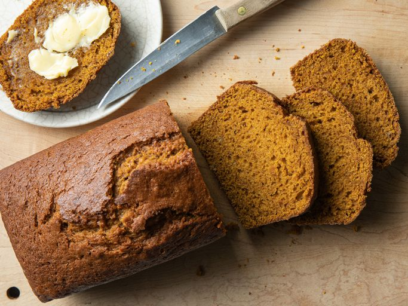

Pumpkin Bread

Description
Moist, and flavor pumpkin bread. Quick and easy to make; Perfect for any occassions.
Ingredients
- 1 (15 ounce) can pumpkin puree
- 4 large eggs
- 1 cup vegetable oil
- 2/3 cup water
- 3 cups white sugar
- 3 1/2 cups all-purpose flour
- 2 teaspoons baking soda
- 1 1/2 teaspoons salt
- 1 teaspoon ground cinnamon
- 1 teaspoon ground nutmeg
- 1/2 teaspoon ground cloves
- 1/2teaspoon ground ginger
Steps
- Preheat the oven to 350 degrees F (175 degrees C). Grease and flour two 9x5-inch loaf pans.
- Whisk flour, baking soda, salt, cinnamon, nutmeg, cloves, and ginger together in a large bowl.
- Mix pumpkin puree, eggs, oil, water, and sugar in a separate bowl until well blended.
- Stir flour mixture into pumpkin mixture until just blended.
- Pour batter into the prepared pans.
- Bake in the preheated oven until a toothpick inserted in center comes out clean, about 50 minutes.
- Enjoy!
The actual recipe sourced for this site is here